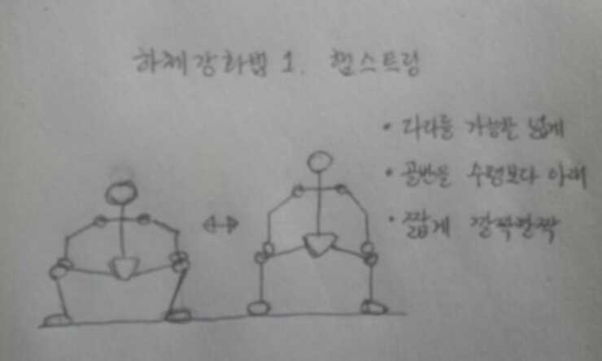
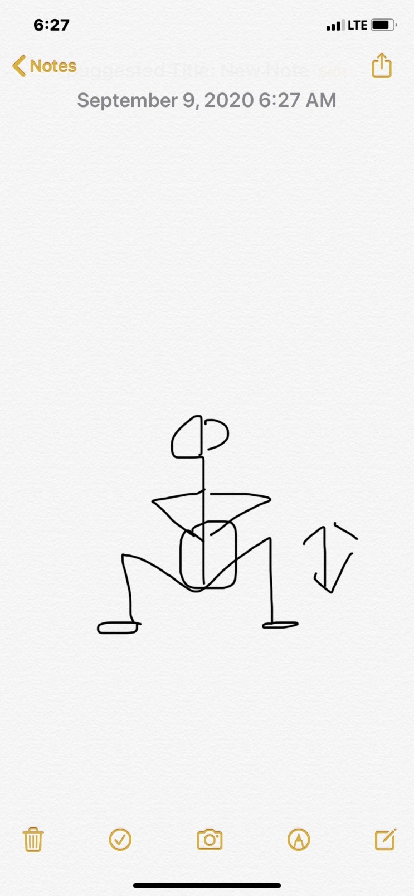

앉았다 일어나기
골반강화를 위해서 다리를 앞뒤로 벌리는 운동 외에 좌우로 벌려서 하는 운동도 필요하다.
다리를 좌우로 벌려서 하는 운동들은 무릎을 굽힐때의 고립을위해 깔짝깔짝으로 운동한다.
스모데드
- 발을 어깨넓이 두배정도, 발의 방향은 최대한 좌우로
- 팔은 앞에 땅에서 바벨을 드는것과 같이 잡아준 후에 다리를 내린다.
- 다리가 수평일때까지 내리고 깔짝깔짝 운동한다.

풀스쿼트
- 발을 어깨 넓이로, 발의 방향은 사선으로
- 다리를 깊게 내린상태에서, 힘을 주는 구간에서 깔짝깔짝
- 가슴앞에 두손을 모은다.
